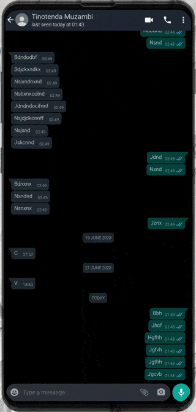

This Python script takes in an exported WhatsApp chat file and using string manipulation shows some statistics about the chat in question. First head over to WhatsApp and export the chat you want analysed and make sure to exclude media. Then copy the text of that file and paste it into the box below and click process.
{% if result != None %} Here are your chat stats: {% endif %}